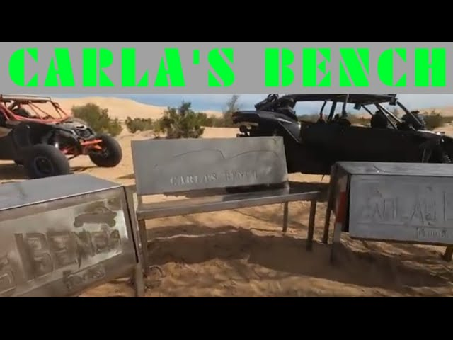
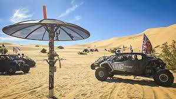
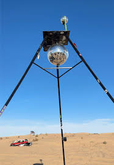
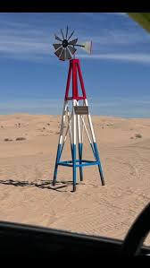

Hidden Spots At Glamis
- Carlas Bench

Carlas bench hidden in the valley behind many trees, bushes and giant dunes. If you are near it you can take a stop to check it out. There are two metal bins and one giant metal bench. It is in memorial of a woman named Carla who loved helping people at Glamis. One bin has an emergency food supply and the other bin has tools and spare parts for vehicles. On one of the bins there is a notebook. Everyone who has visited Carlas Bench has wrote a small message or their family name.
- Satalite

Behind a big dune there is a small Satalite. People who visit put stickers or notes on the pole. The shape of this Satalite is like an umbrella. People also hang intems from the top of the umbrella and brands put their logos.
- Disco Ball

This Disco Ball location is new location. You are able to plug in your can-ams and turn the disco ball on. The light will turn on and it will spin. This stop is located near Gecko Road.
- WindMill

The glamis windmill is another destination for your trip. It is about 9 ft tall and the blades actually spin. Brands have their placs on the poles. In person the brand Marshan Whips put their Alien plac on the top of the windmill. This destination is hidden behind the dunes.